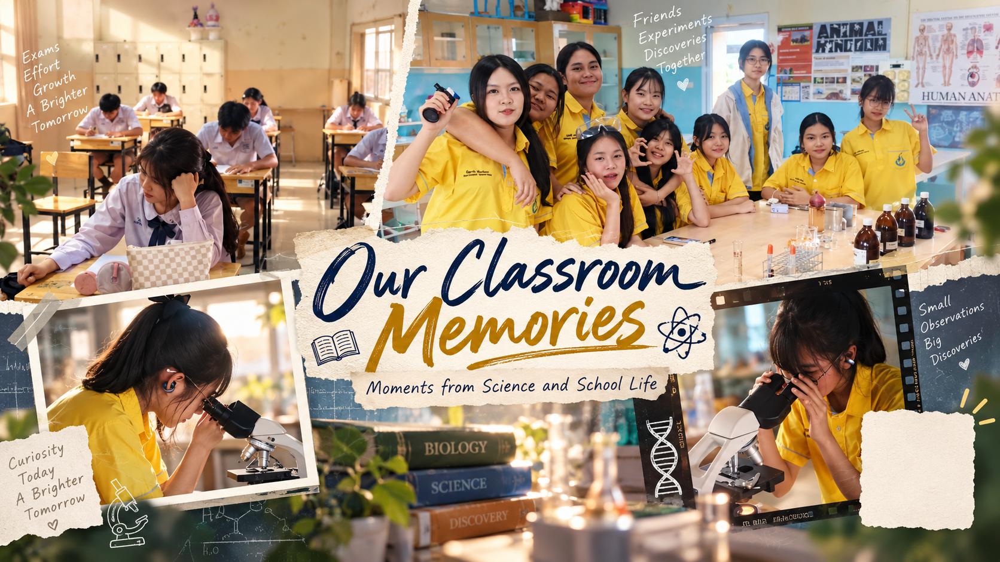
Our Classroom Memories
A special scrapbook-style opening page celebrating science lessons, classroom activities, teamwork, and school memories.
หน้าปกสไตล์สมุดภาพที่รวบรวมความทรงจำจากบทเรียนวิทยาศาสตร์ กิจกรรมในห้องเรียน การทำงานเป็นทีม และช่วงเวลาดี ๆ ในโรงเรียน
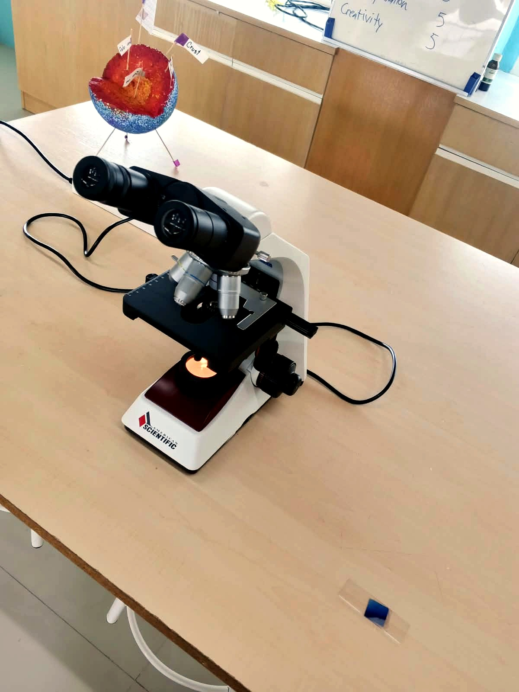
Microscope Ready for Discovery
The lab setup was ready, and every small detail reminded us that big discoveries often begin with a simple observation.
อุปกรณ์ในห้องปฏิบัติการพร้อมแล้ว และรายละเอียดเล็ก ๆ ทุกอย่างเตือนเราว่า การค้นพบครั้งใหญ่มักเริ่มต้นจากการสังเกตอย่างง่าย
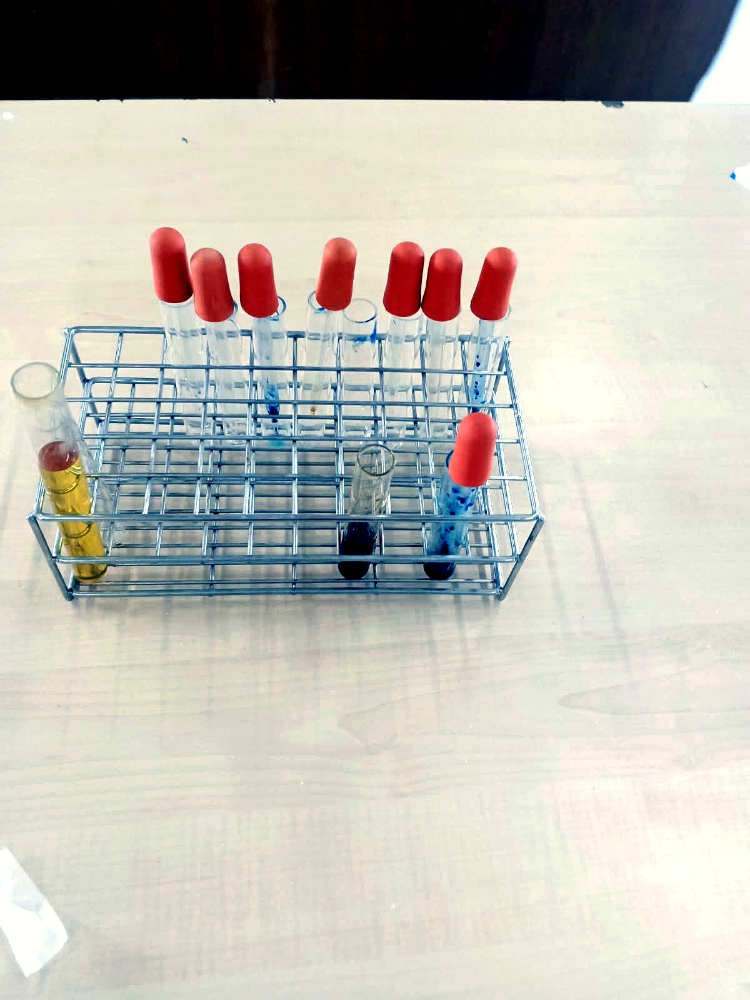
Test Tubes and Curiosity
A neat rack of test tubes waiting for the next experiment — a small snapshot of careful preparation in the science lab.
ชั้นวางหลอดทดลองที่จัดไว้อย่างเรียบร้อย รอการทดลองครั้งต่อไป เป็นภาพเล็ก ๆ ที่สะท้อนถึงการเตรียมตัวอย่างรอบคอบในห้องปฏิบัติการวิทยาศาสตร์
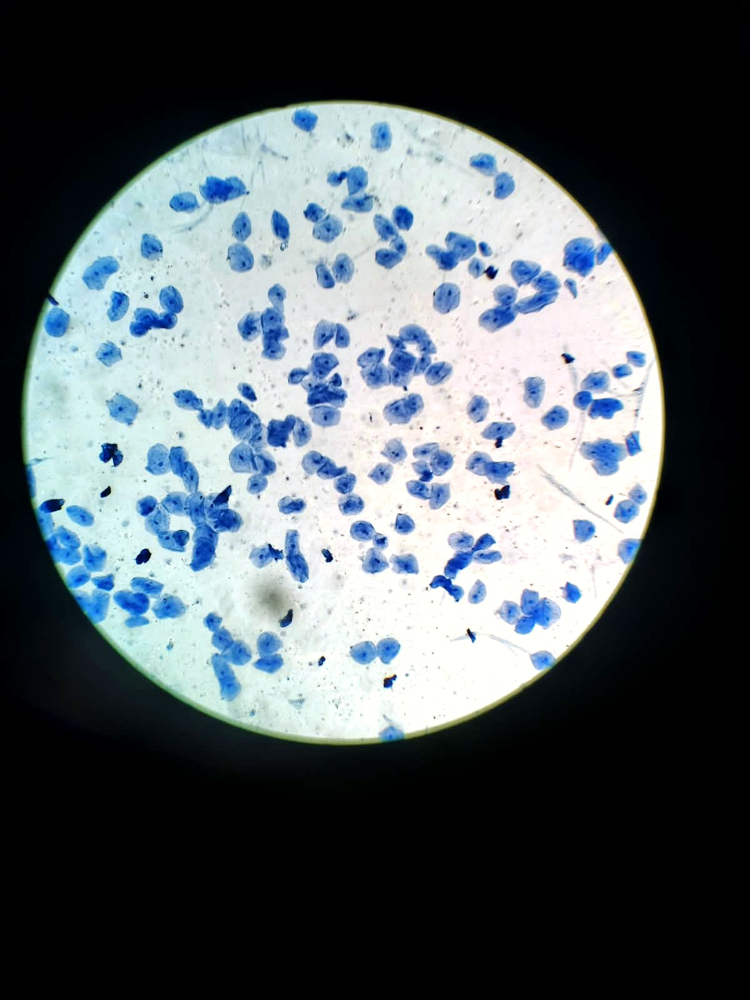
A Microscopic World
A fascinating microscope view that turned an ordinary lesson into a close-up journey through the hidden world of cells.
ภาพจากกล้องจุลทรรศน์ที่น่าสนใจ เปลี่ยนบทเรียนธรรมดาให้กลายเป็นการเดินทางเข้าไปสำรวจโลกเล็ก ๆ ของเซลล์อย่างใกล้ชิด
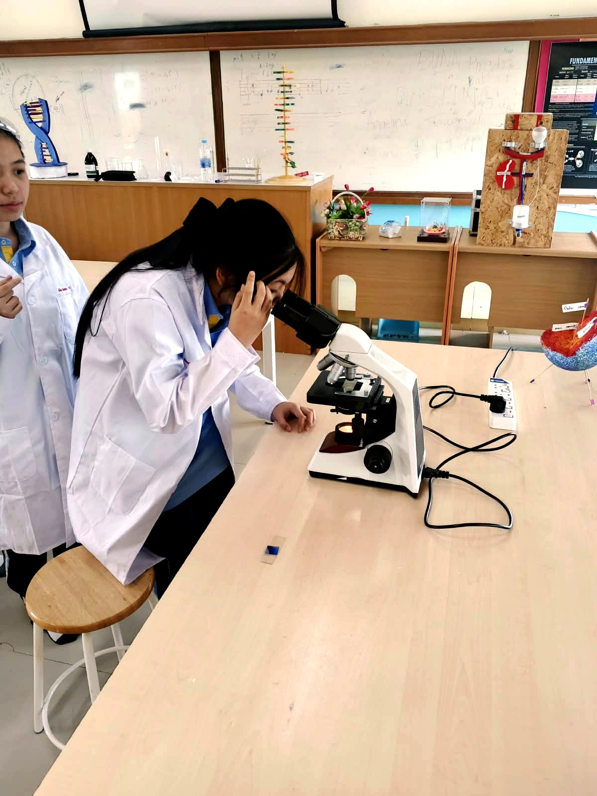
Focused on the Lens
A moment of concentration and curiosity as science came alive through the microscope.
ช่วงเวลาแห่งสมาธิและความอยากรู้อยากเห็น เมื่อวิทยาศาสตร์มีชีวิตขึ้นมาผ่านเลนส์ของกล้องจุลทรรศน์
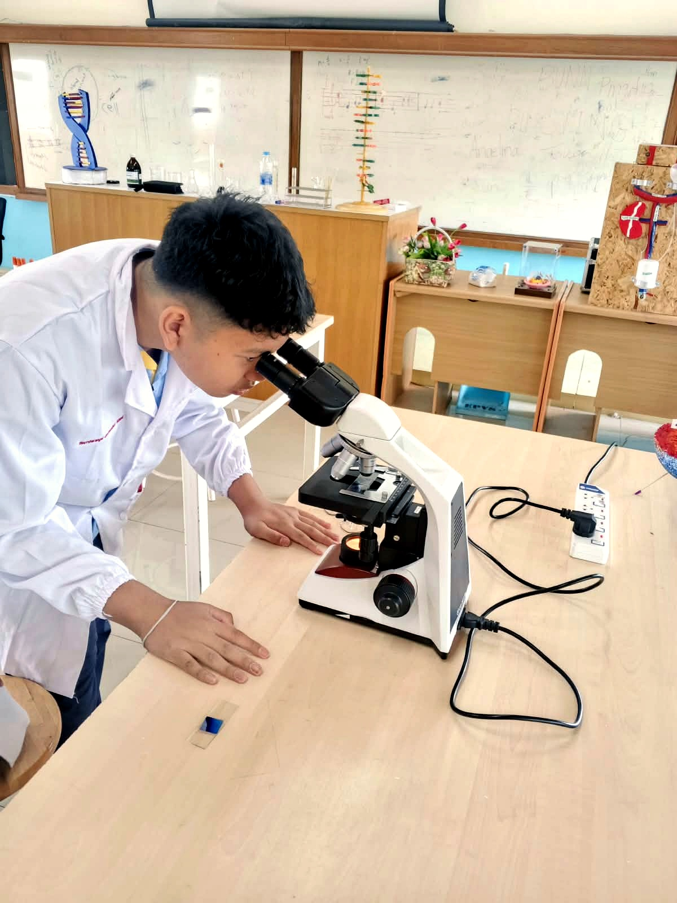
Learning by Looking Closer
Confidence grows when students get the chance to explore, observe, and discover with their own hands.
ความมั่นใจเติบโตขึ้นเมื่อผู้เรียนได้มีโอกาสสำรวจ สังเกต และค้นพบสิ่งต่าง ๆ ด้วยตนเอง
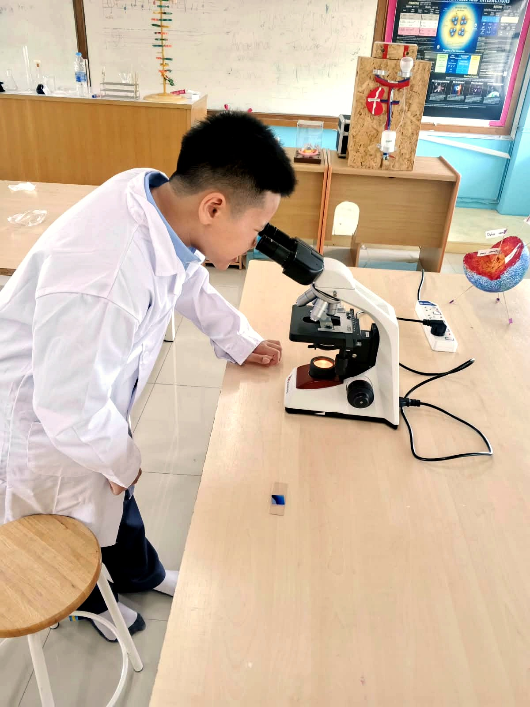
Science in Action
Hands-on learning turned the classroom into a place of real discovery, one careful observation at a time.
การเรียนรู้แบบลงมือปฏิบัติทำให้ห้องเรียนกลายเป็นพื้นที่แห่งการค้นพบจริง ๆ จากการสังเกตอย่างรอบคอบทีละขั้น
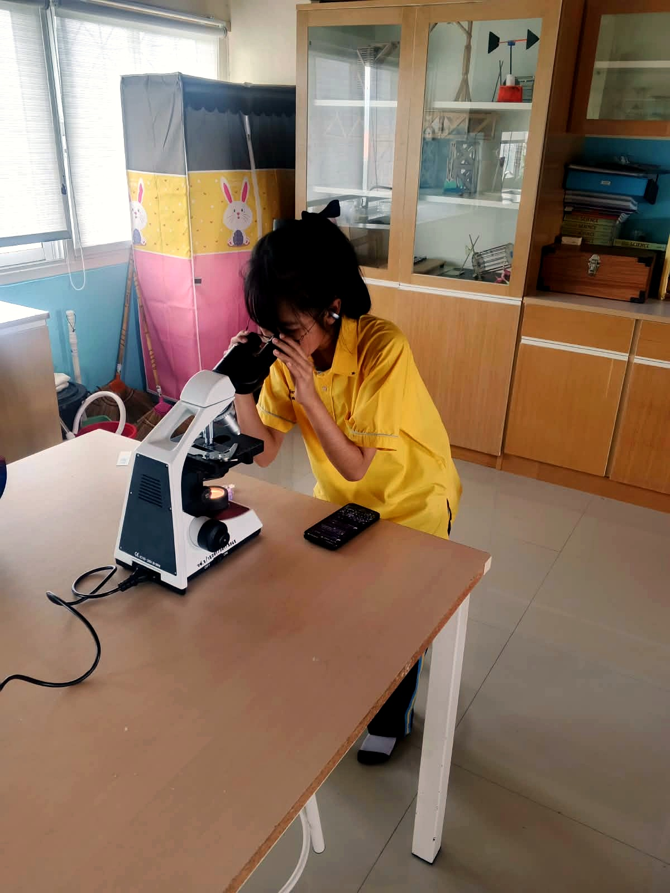
Curiosity Through the Microscope
A quiet and thoughtful moment where curiosity led the way and science became something to see for yourself.
ช่วงเวลาที่เงียบสงบและเต็มไปด้วยความคิด เมื่อความอยากรู้อยากเห็นนำทาง และวิทยาศาสตร์กลายเป็นสิ่งที่มองเห็นได้ด้วยตาตนเอง
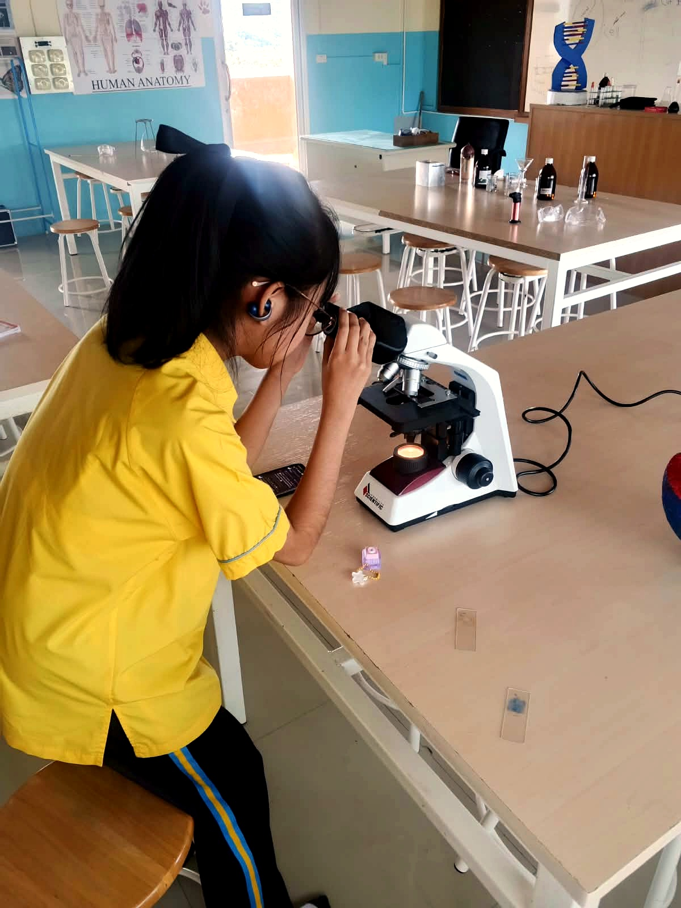
Discovering the Unseen
The best classroom moments are often the ones where students lean in closer and find something new.
ช่วงเวลาที่ดีที่สุดในห้องเรียนมักเกิดขึ้นเมื่อผู้เรียนก้มมองใกล้ ๆ และค้นพบสิ่งใหม่ที่ไม่เคยเห็นมาก่อน
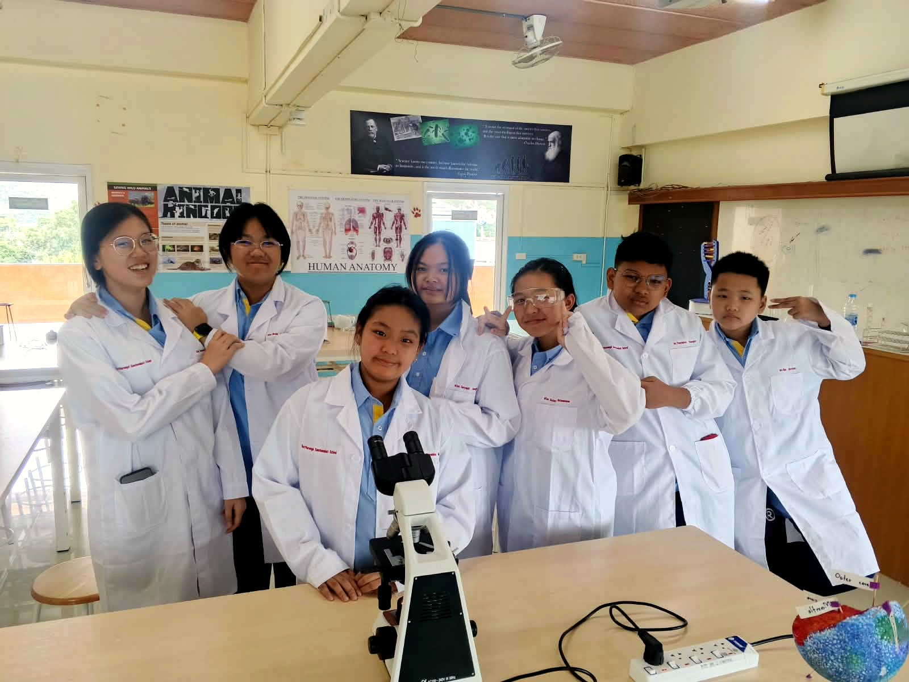
Young Scientists Together
A cheerful group memory celebrating teamwork, confidence, and the joy of learning together in the lab.
ภาพความทรงจำของกลุ่มนักวิทยาศาสตร์รุ่นเยาว์ที่เต็มไปด้วยความสุข แสดงถึงการทำงานเป็นทีม ความมั่นใจ และความสนุกของการเรียนรู้ร่วมกันในห้องปฏิบัติการ
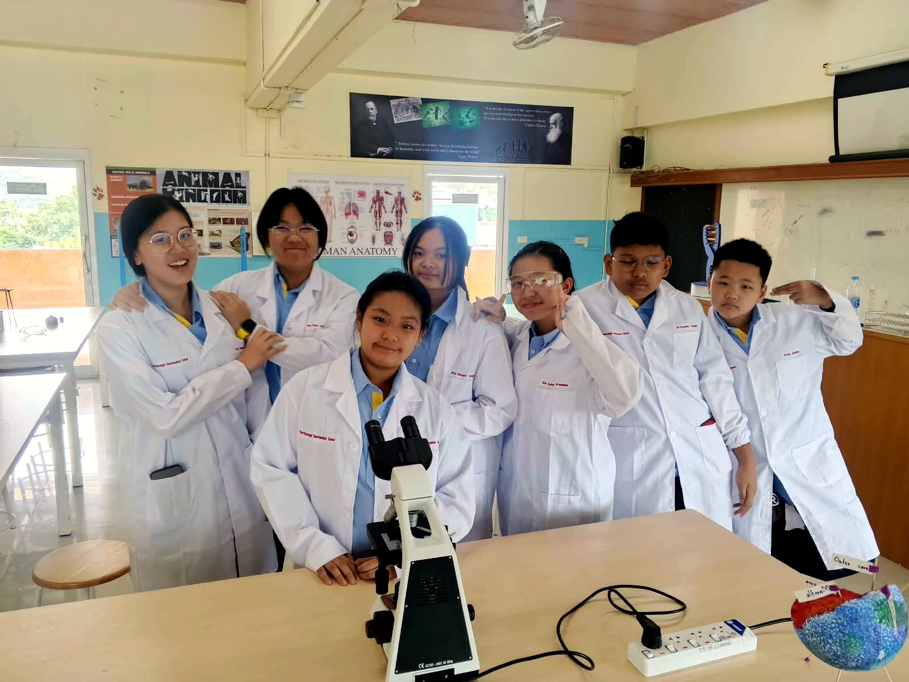
Lab Coats and Big Smiles
Science brought everyone together — this frame captures friendship, fun, and shared learning.
วิทยาศาสตร์พาทุกคนมารวมกัน ภาพนี้เก็บทั้งมิตรภาพ ความสนุก และการเรียนรู้ร่วมกันไว้ในช่วงเวลาเดียว
A Happy Science Group
A bright and joyful class moment filled with smiles, confidence, and memories worth keeping.
ช่วงเวลาที่สดใสและสนุกสนานของชั้นเรียน เต็มไปด้วยรอยยิ้ม ความมั่นใจ และความทรงจำที่ควรเก็บไว้
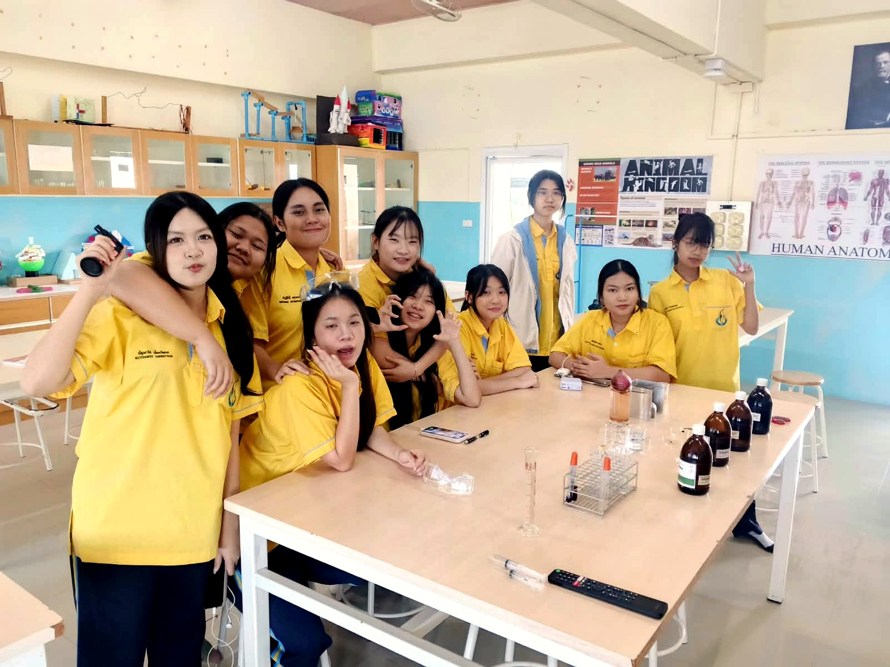
Friends, Experiments, and Laughter
This moment perfectly captured the balance of friendship and discovery that made the classroom feel special.
ภาพนี้ถ่ายทอดความสมดุลระหว่างมิตรภาพและการค้นพบได้อย่างพอดี ทำให้ห้องเรียนเป็นสถานที่ที่พิเศษยิ่งขึ้น
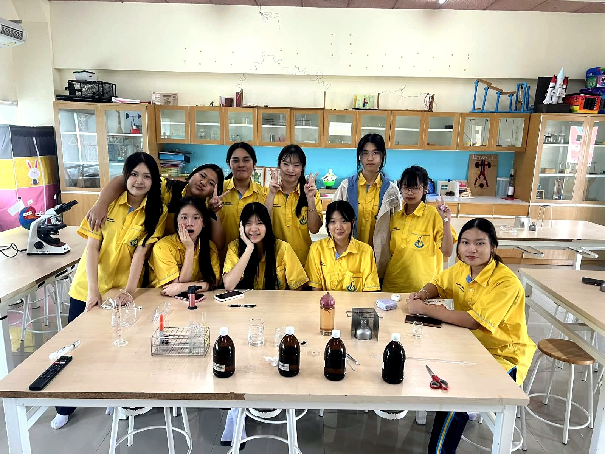
Full Group, Full of Memories
A larger group memory that reflects class spirit, participation, and the energy of practical science learning.
ภาพหมู่ขนาดใหญ่ที่สะท้อนถึงพลังของชั้นเรียน การมีส่วนร่วม และบรรยากาศที่กระตือรือร้นของการเรียนวิทยาศาสตร์ภาคปฏิบัติ
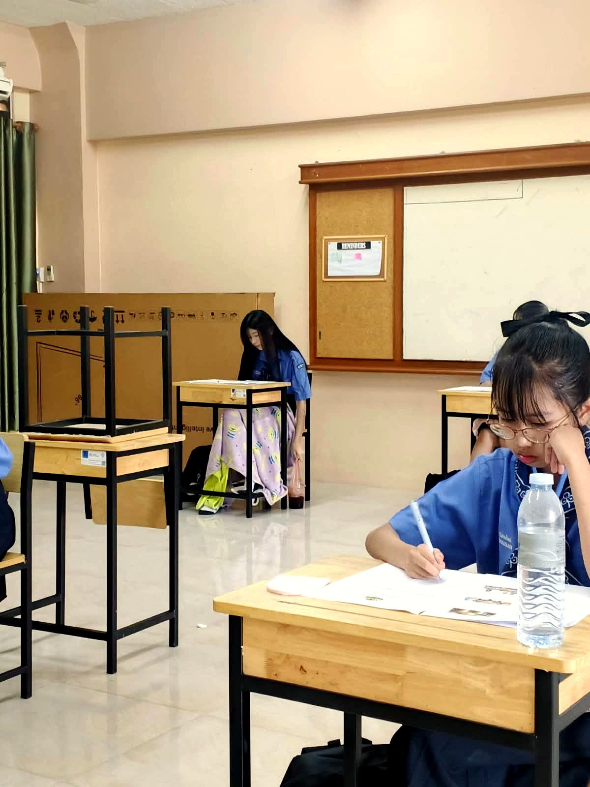
A Quiet Exam Moment
A calm and focused classroom scene that reminds us how much effort and dedication students bring to their learning.
บรรยากาศในห้องสอบที่สงบและมีสมาธิ เตือนให้เห็นถึงความพยายามและความตั้งใจที่ผู้เรียนทุ่มเทให้กับการเรียนของตน
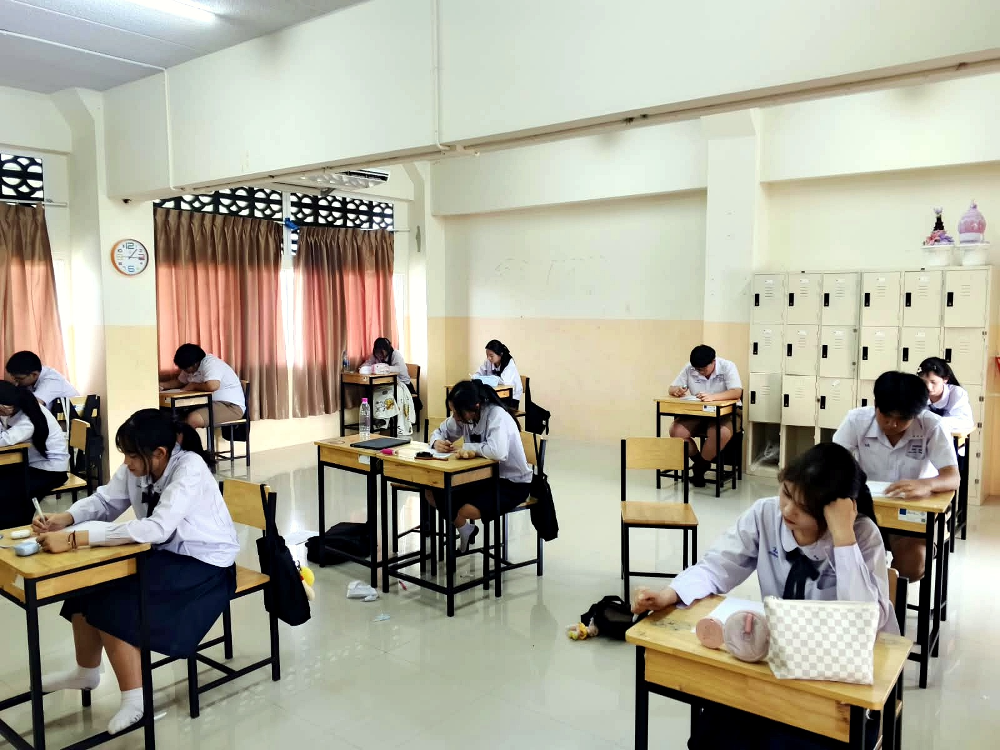
Concentration Across the Room
The exam room was quiet, but every desk reflected hard work, focus, and determination.
ห้องสอบเงียบสงบ แต่ทุกโต๊ะสะท้อนถึงความขยัน ความตั้งใจ และความมุ่งมั่น
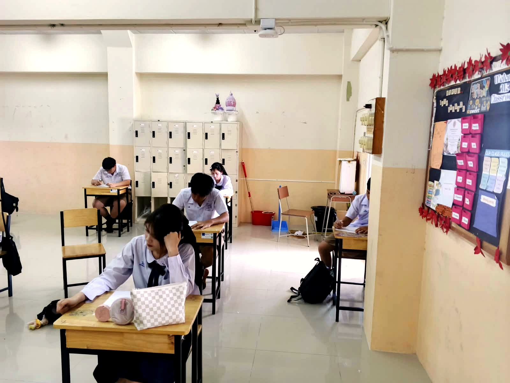
Working Toward Success
Every student had their own quiet moment of effort, showing the discipline and commitment behind classroom success.
ผู้เรียนแต่ละคนมีช่วงเวลาแห่งความพยายามของตนเอง แสดงถึงวินัยและความมุ่งมั่นที่อยู่เบื้องหลังความสำเร็จในห้องเรียน
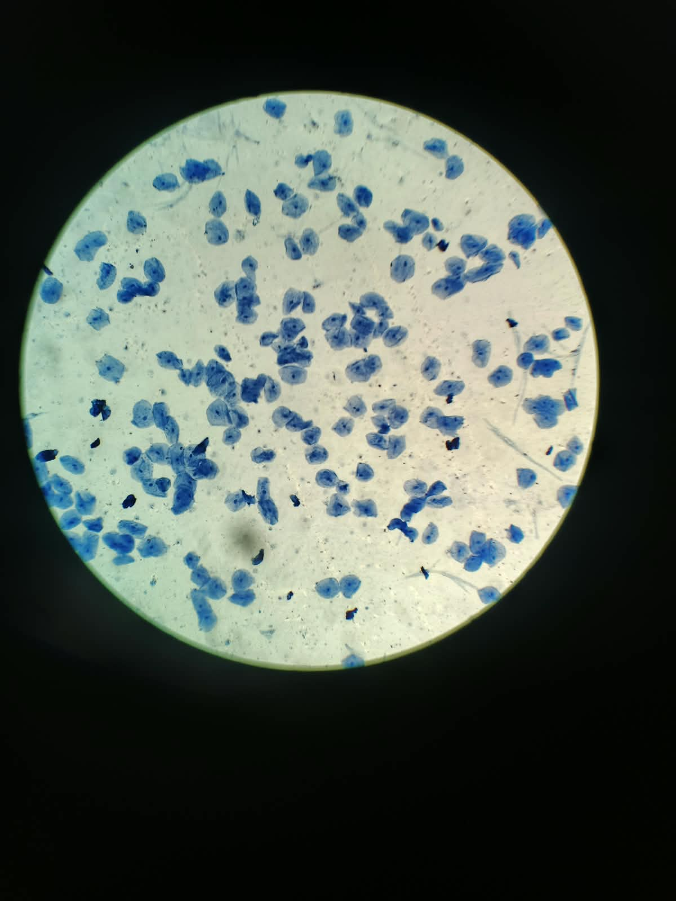
Microscope Observation
A microscope view showing stained cells — one of our memorable science observations.
ภาพจากกล้องจุลทรรศน์ที่แสดงเซลล์ซึ่งผ่านการย้อมสี เป็นหนึ่งในช่วงเวลาการสังเกตทางวิทยาศาสตร์ที่น่าจดจำของเรา
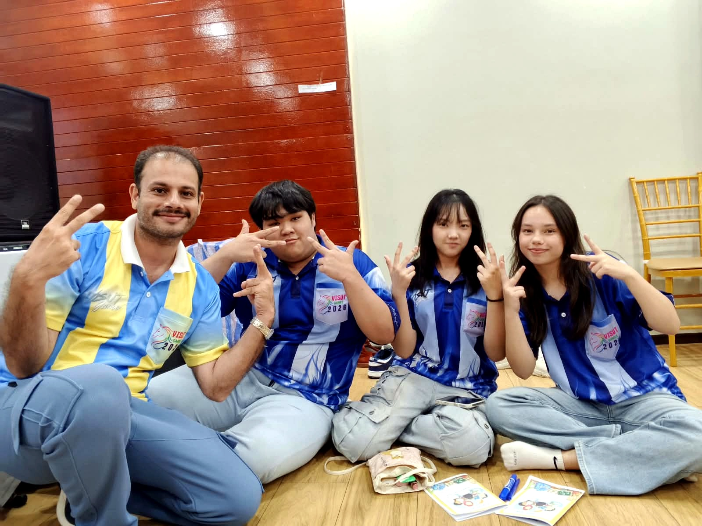
A Fun Team Moment
A relaxed group memory full of smiles, peace signs, and the easy friendship that makes school events special.
ภาพกลุ่มสบาย ๆ ที่เต็มไปด้วยรอยยิ้ม สัญลักษณ์สันติภาพ และมิตรภาพแบบเป็นธรรมชาติซึ่งทำให้งานโรงเรียนพิเศษยิ่งขึ้น
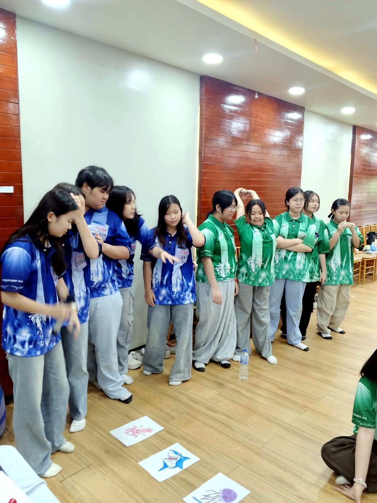
Teams Ready for the Challenge
Blue and green teams lined up together, ready to participate, compete, and enjoy the activity as one school community.
ทีมสีน้ำเงินและสีเขียวยืนเรียงกัน พร้อมเข้าร่วม แข่งขัน และสนุกกับกิจกรรมในฐานะชุมชนโรงเรียนเดียวกัน
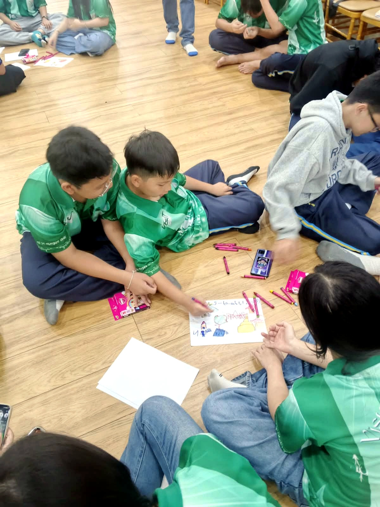
Creating Together
Students worked side by side on a creative task, sharing ideas and turning simple materials into a team effort.
ผู้เรียนทำงานเคียงข้างกันในกิจกรรมสร้างสรรค์ แลกเปลี่ยนความคิดและเปลี่ยนวัสดุง่าย ๆ ให้กลายเป็นผลงานจากความร่วมมือ
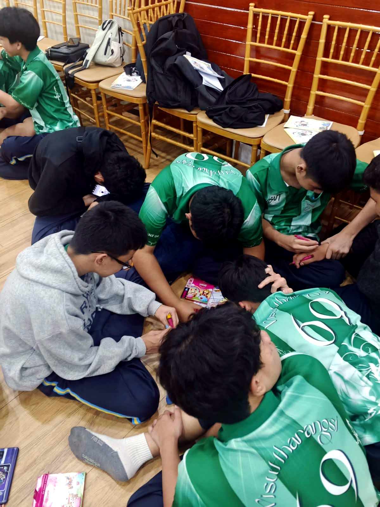
Teamwork on the Floor
A hands-on activity where cooperation, patience, and a little creativity brought the group together.
กิจกรรมแบบลงมือทำที่นำความร่วมมือ ความอดทน และความคิดสร้างสรรค์มารวมกัน จนเกิดเป็นพลังของทีม
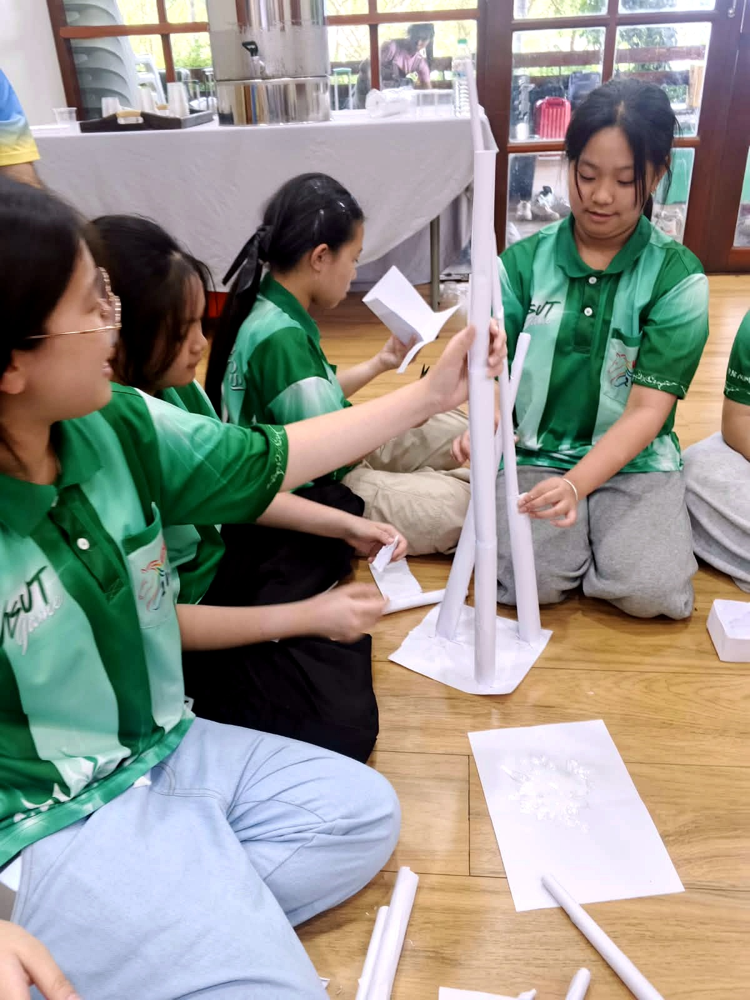
Building Ideas into Reality
A focused team moment showing how students can turn paper, planning, and imagination into something they are proud of.
ช่วงเวลาที่ทุกคนมีสมาธิ แสดงให้เห็นว่ากระดาษ การวางแผน และจินตนาการสามารถกลายเป็นผลงานที่น่าภาคภูมิใจได้
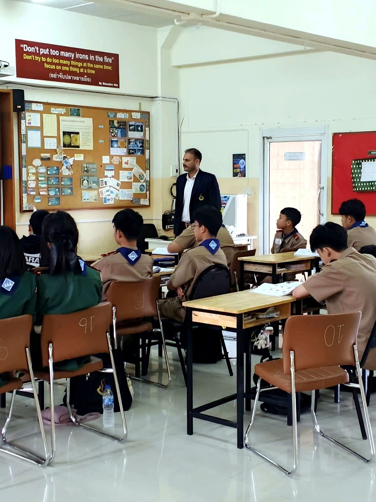
A Lesson in Progress
A classroom scene capturing the everyday rhythm of teaching, listening, questioning, and learning together.
ภาพบรรยากาศในห้องเรียนที่สะท้อนจังหวะการสอน การฟัง การตั้งคำถาม และการเรียนรู้ร่วมกันในแต่ละวัน
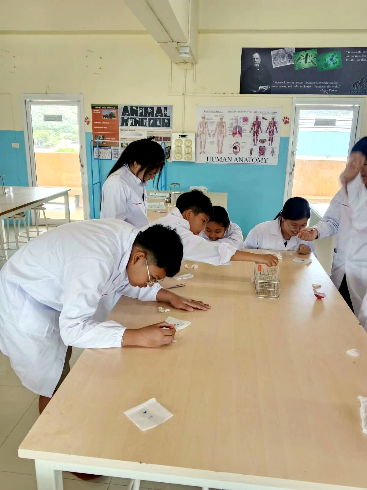
Preparing the Specimens
Students carefully prepared their materials before observation — a small but important step in practical science.
ผู้เรียนเตรียมวัสดุอย่างระมัดระวังก่อนการสังเกต เป็นขั้นตอนเล็ก ๆ แต่สำคัญมากในการเรียนวิทยาศาสตร์ภาคปฏิบัติ
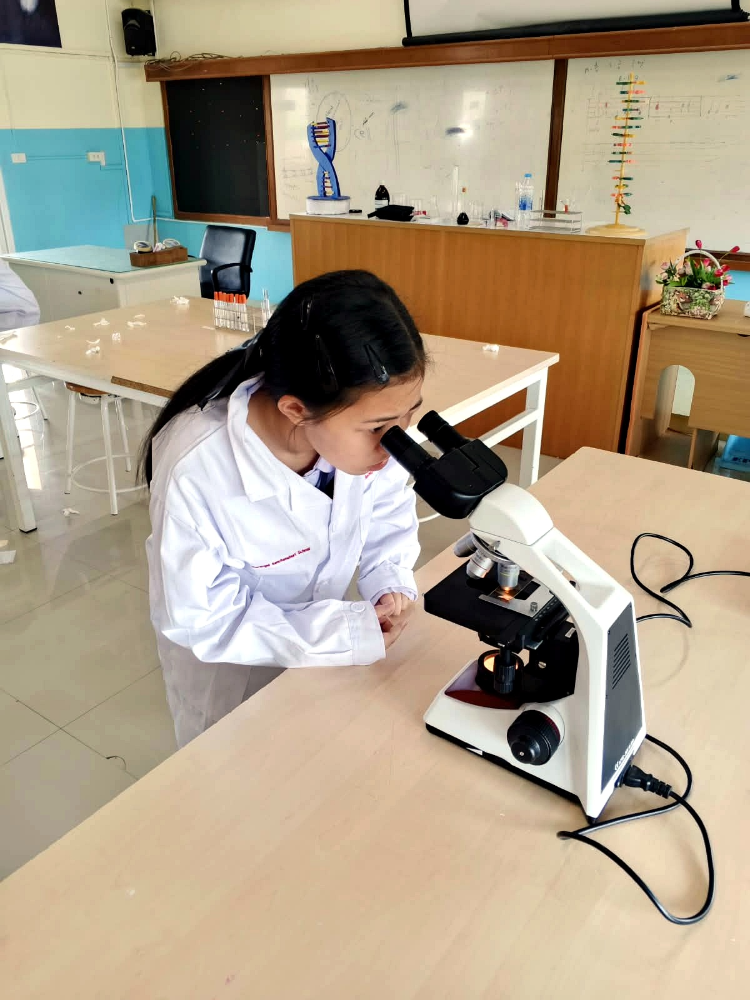
Looking Closer
A student explores the specimen through the microscope, turning a classroom exercise into a real moment of discovery.
ผู้เรียนสำรวจตัวอย่างผ่านกล้องจุลทรรศน์ เปลี่ยนกิจกรรมในห้องเรียนให้กลายเป็นช่วงเวลาแห่งการค้นพบจริง ๆ
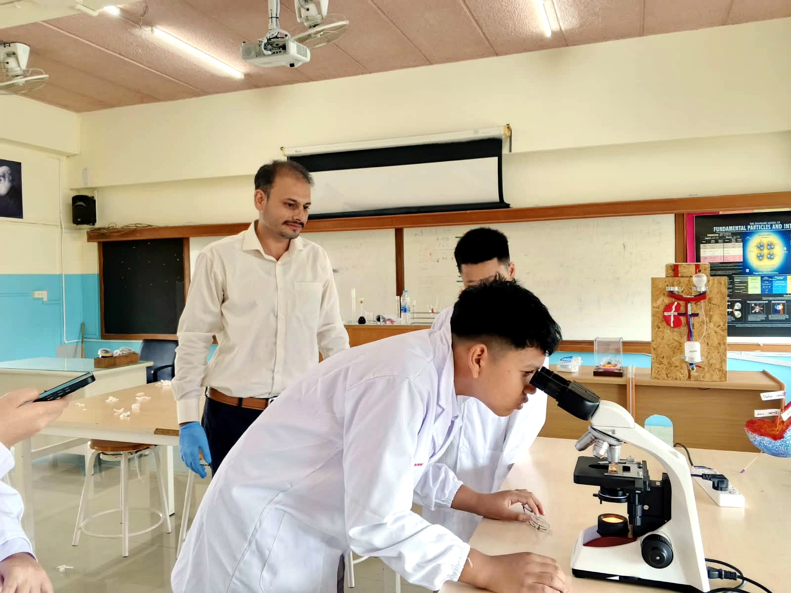
Observation with Guidance
Practical learning becomes more meaningful when students can observe, ask questions, and receive guidance as they work.
การเรียนภาคปฏิบัติมีความหมายมากขึ้นเมื่อผู้เรียนได้สังเกต ตั้งคำถาม และรับคำแนะนำระหว่างลงมือทำ
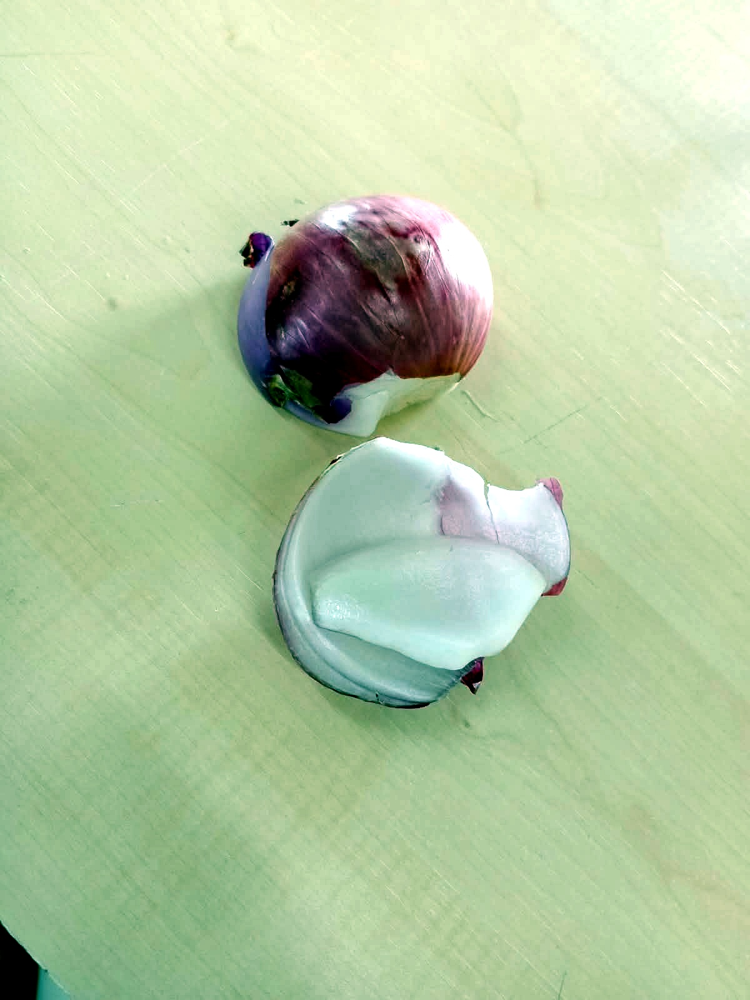
From Onion to Microscope
A simple onion became the starting point for a practical lesson about cells, tissues, and scientific observation.
หัวหอมธรรมดากลายเป็นจุดเริ่มต้นของบทเรียนภาคปฏิบัติเกี่ยวกับเซลล์ เนื้อเยื่อ และการสังเกตทางวิทยาศาสตร์
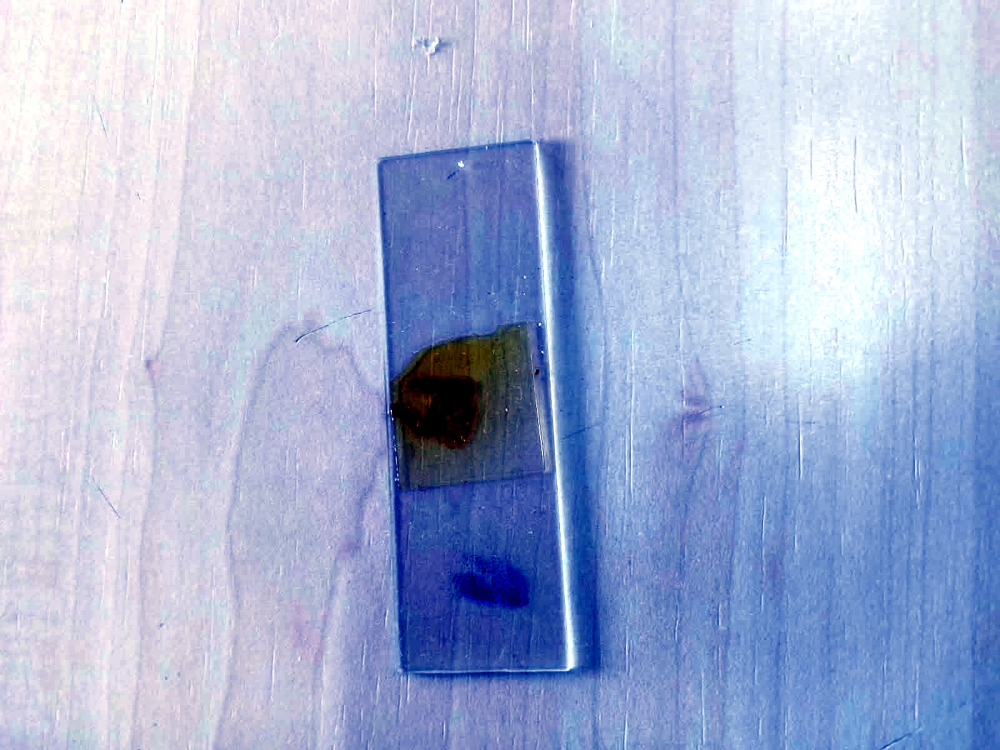
Slide Preparation
A prepared slide ready for examination — proof that careful technique matters before the microscope work even begins.
สไลด์ที่เตรียมพร้อมสำหรับการตรวจดู แสดงให้เห็นว่าเทคนิคที่ละเอียดและถูกต้องมีความสำคัญก่อนเริ่มใช้กล้องจุลทรรศน์
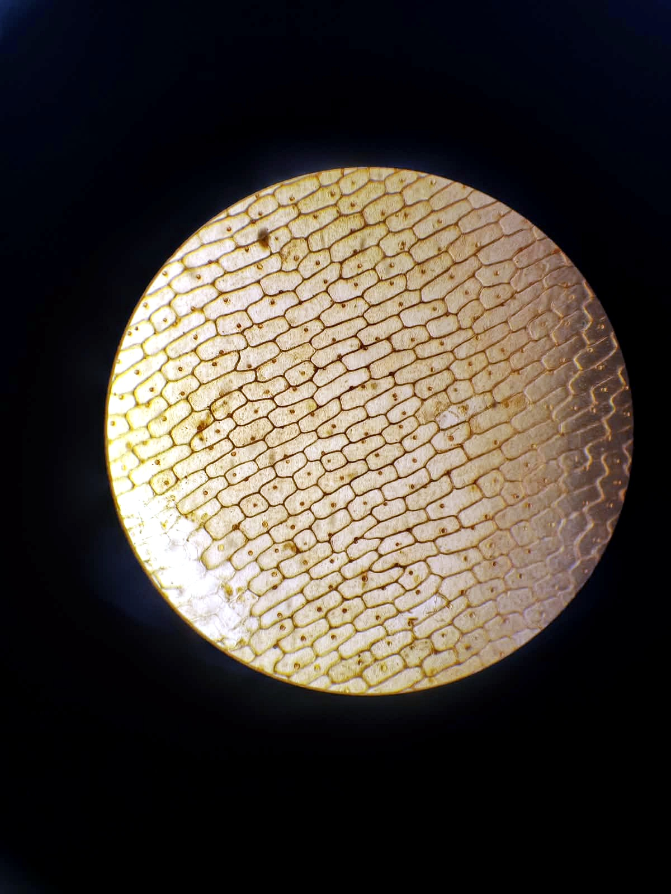
Onion Epidermal Cells
A clear microscopic view of onion epidermal cells, showing the beautiful brick-like pattern of plant cell walls.
ภาพเซลล์ผิวหัวหอมที่เห็นได้ชัดเจนผ่านกล้องจุลทรรศน์ แสดงรูปแบบผนังเซลล์ของพืชที่คล้ายอิฐอย่างสวยงาม
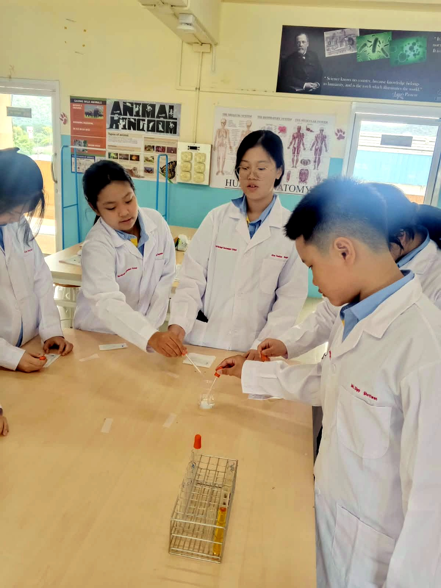
Working Through the Method
Students follow the practical steps together, learning that good science depends on care, consistency, and teamwork.
ผู้เรียนทำตามขั้นตอนภาคปฏิบัติร่วมกัน และเรียนรู้ว่าวิทยาศาสตร์ที่ดีต้องอาศัยความรอบคอบ ความสม่ำเสมอ และการทำงานเป็นทีม
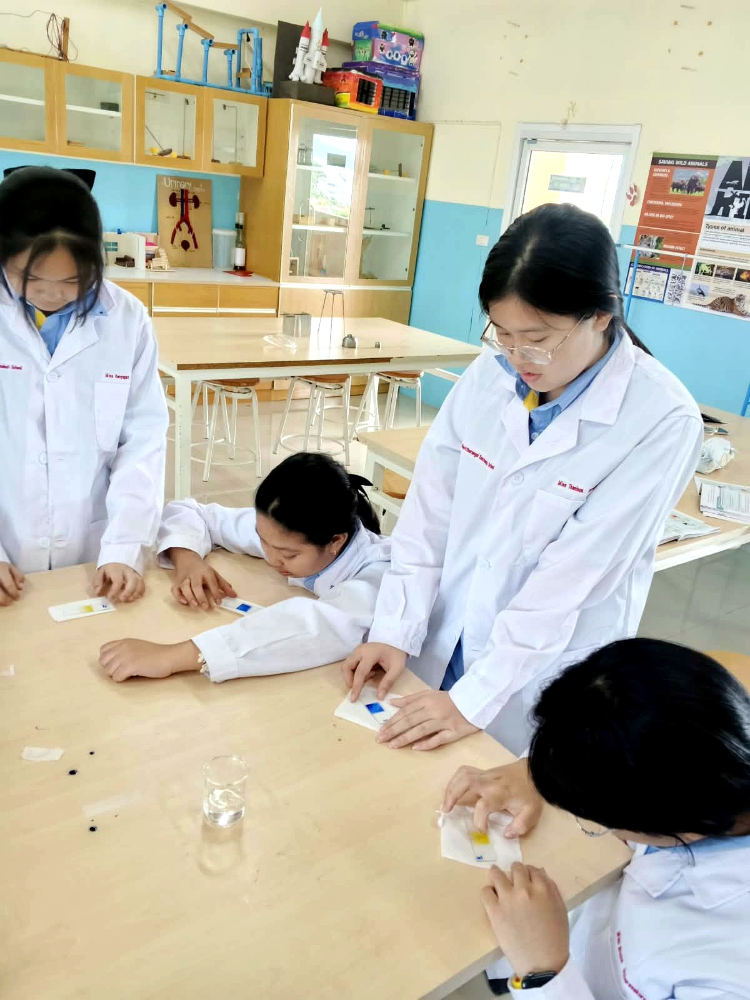
Preparing Slides as a Team
Students compare and prepare their slides together, helping one another turn a procedure into understanding.
ผู้เรียนเปรียบเทียบและเตรียมสไลด์ร่วมกัน ช่วยเหลือกันเพื่อเปลี่ยนขั้นตอนการทดลองให้กลายเป็นความเข้าใจ
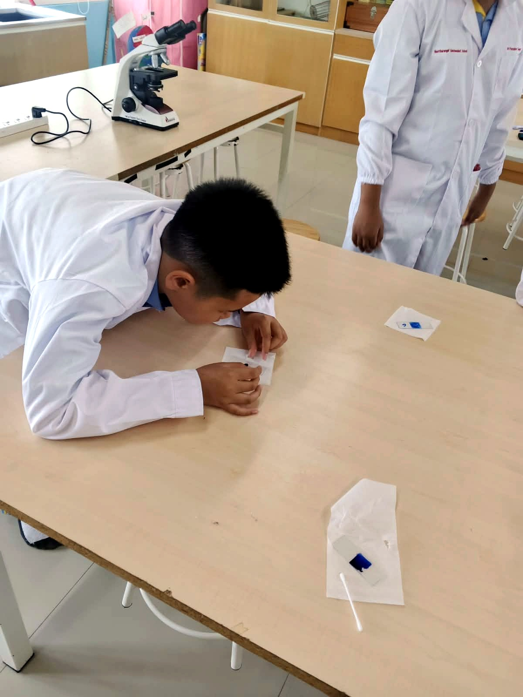
Careful Hands, Careful Science
A close practical moment showing the patience and attention needed to prepare a specimen properly.
ช่วงเวลาภาคปฏิบัติที่แสดงถึงความอดทนและความใส่ใจที่จำเป็นต่อการเตรียมตัวอย่างอย่างถูกต้อง
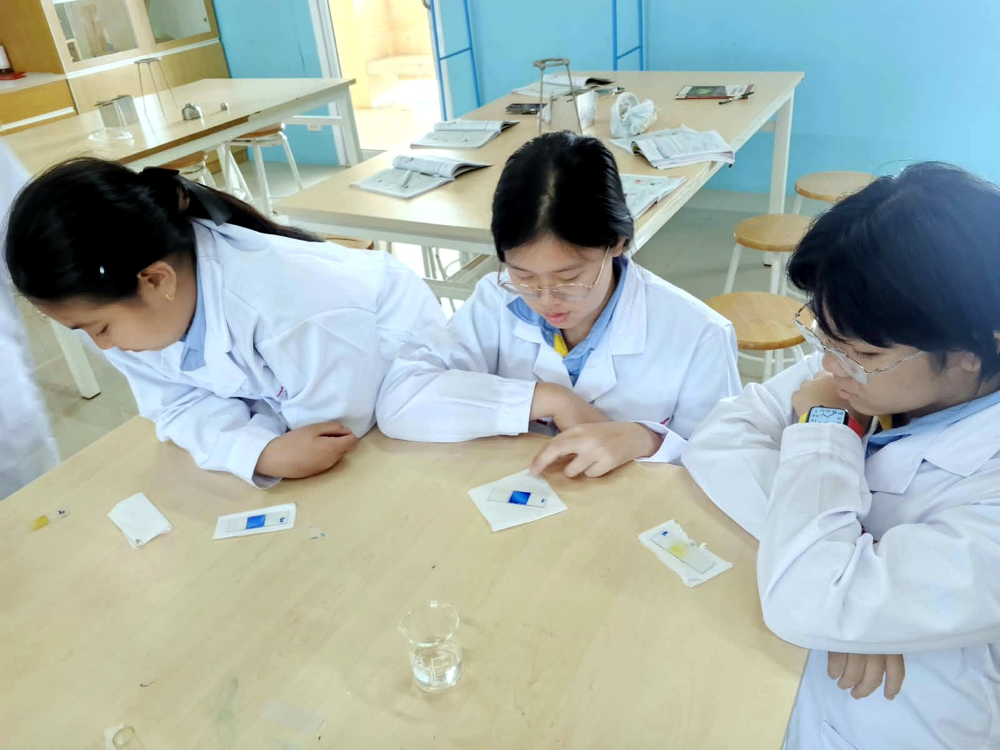
Comparing Prepared Slides
Students inspect their prepared slides before microscopy, checking their work and learning from each other.
ผู้เรียนตรวจดูสไลด์ที่เตรียมไว้ก่อนใช้กล้องจุลทรรศน์ เพื่อเช็กผลงานและเรียนรู้จากกันและกัน
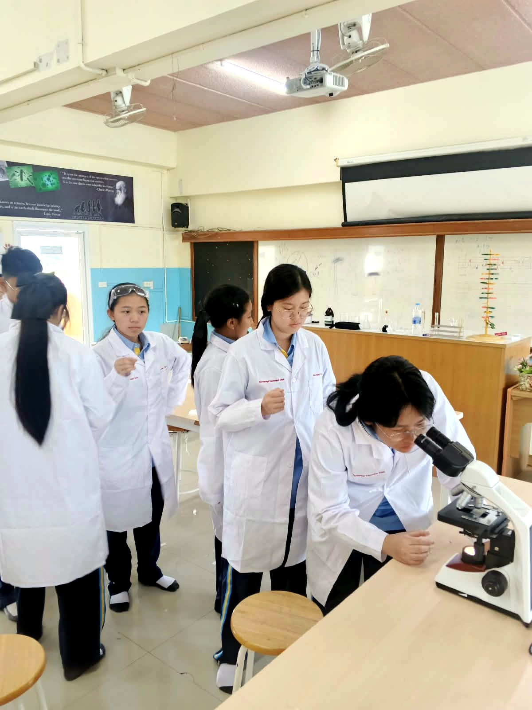
Waiting for a Turn
Practical lessons are also about patience — students wait, watch, and learn from each other's observations.
บทเรียนภาคปฏิบัติยังสอนเรื่องความอดทน ผู้เรียนรอ ดู และเรียนรู้จากการสังเกตของเพื่อน ๆ
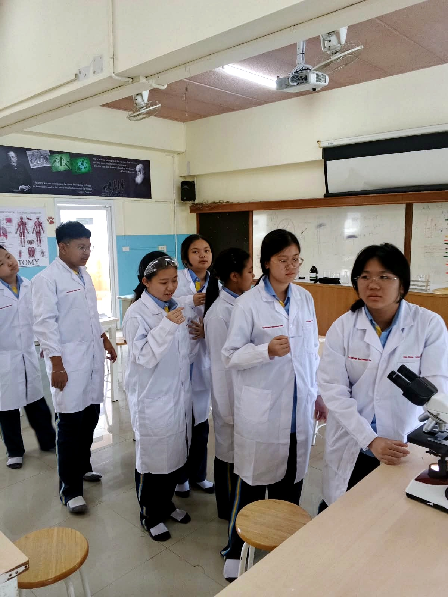
Ready to Observe
A group gathers around the microscope, ready to see how their preparation looks under magnification.
กลุ่มผู้เรียนรวมตัวกันรอบกล้องจุลทรรศน์ พร้อมดูว่าตัวอย่างที่เตรียมไว้จะเป็นอย่างไรเมื่อขยายภาพ
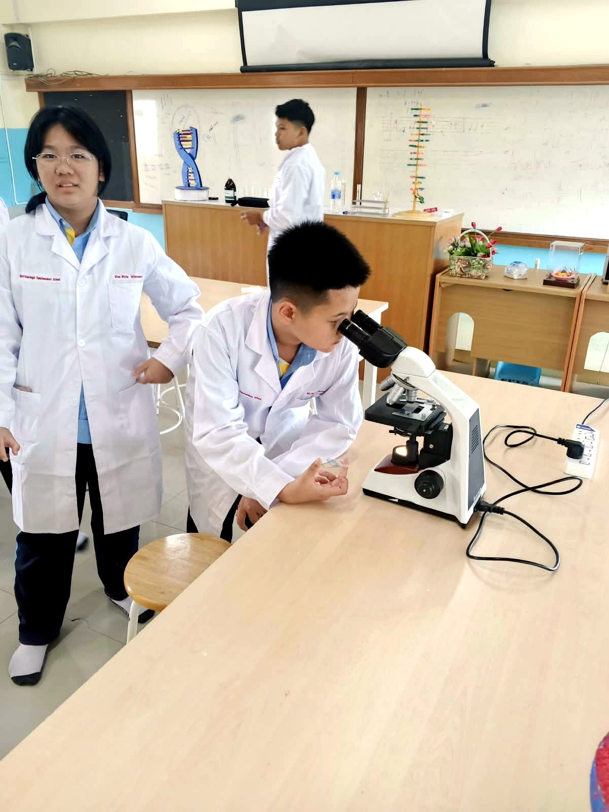
Another Look Through the Lens
A final close-up moment at the microscope, capturing curiosity, concentration, and the excitement of seeing science directly.
อีกหนึ่งช่วงเวลาระยะใกล้ที่กล้องจุลทรรศน์ ถ่ายทอดทั้งความอยากรู้อยากเห็น สมาธิ และความตื่นเต้นของการได้เห็นวิทยาศาสตร์ด้วยตนเอง
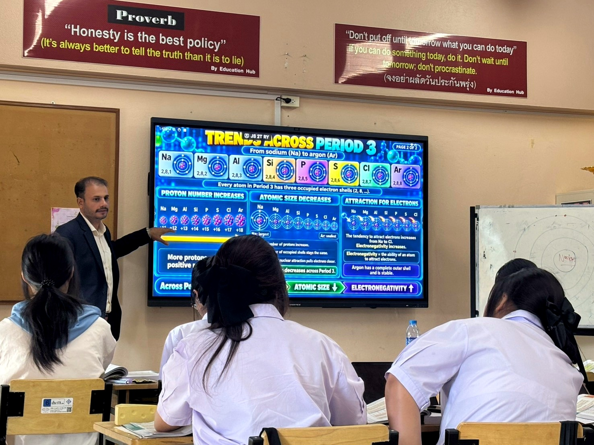
Explaining Period 3 Trends
A focused classroom lesson where periodic trends across Period 3 are explained with the help of a clear visual presentation.
บทเรียนที่มีสมาธิซึ่งอธิบายแนวโน้มของธาตุในคาบที่ 3 โดยใช้ภาพประกอบที่ชัดเจนช่วยให้เข้าใจได้ง่ายขึ้น
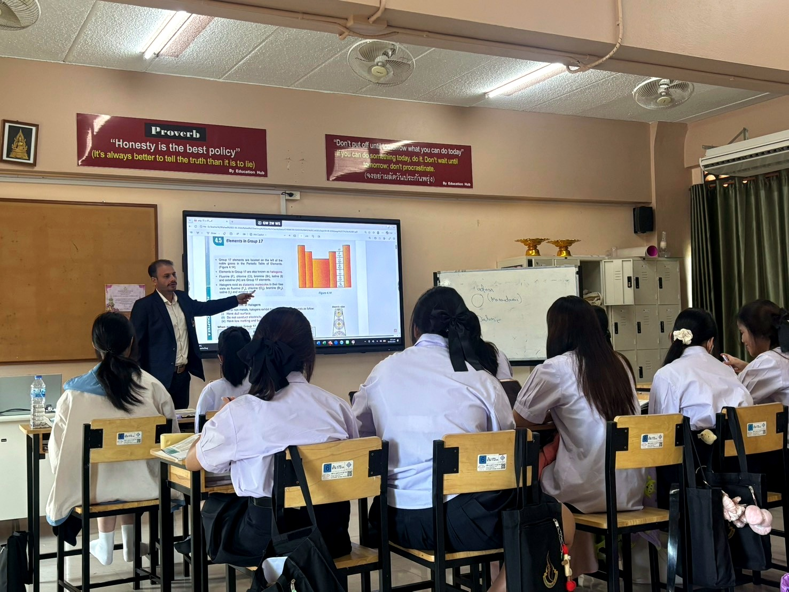
Teaching the Elements of Group 17
Students follow attentively as the discussion moves to Group 17, connecting textbook concepts with classroom explanation.
ผู้เรียนติดตามอย่างตั้งใจเมื่อบทเรียนเข้าสู่ธาตุหมู่ 17 และเชื่อมโยงเนื้อหาในหนังสือกับคำอธิบายในชั้นเรียน
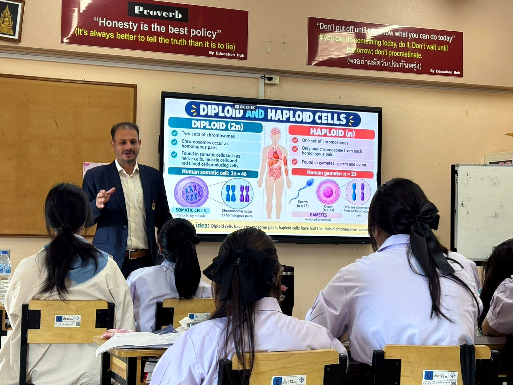
Diploid and Haploid Cells
A memorable biology lesson introducing the difference between diploid and haploid cells in a simple and engaging way.
บทเรียนชีววิทยาที่น่าจดจำซึ่งอธิบายความแตกต่างระหว่างเซลล์ดิพลอยด์และแฮพลอยด์ด้วยวิธีที่เรียบง่ายและน่าสนใจ
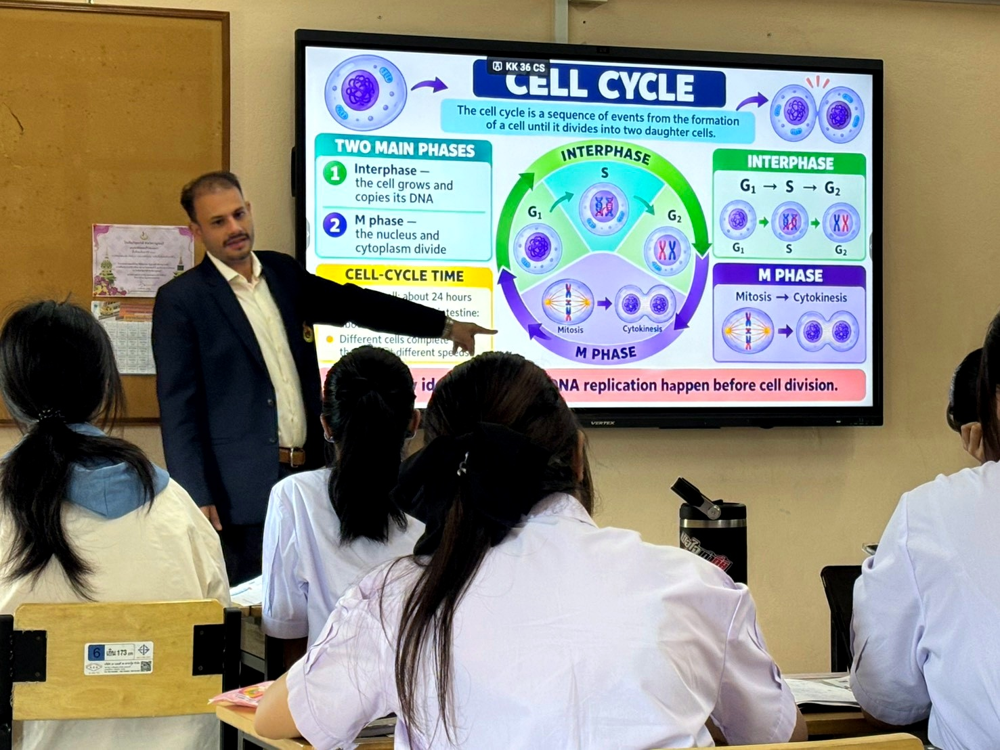
Learning the Cell Cycle
The class explores the stages of the cell cycle, linking diagrams on the screen with ideas from the lesson.
ชั้นเรียนสำรวจขั้นตอนต่าง ๆ ของวัฏจักรเซลล์ โดยเชื่อมโยงภาพบนหน้าจอกับแนวคิดที่เรียนในบทเรียน
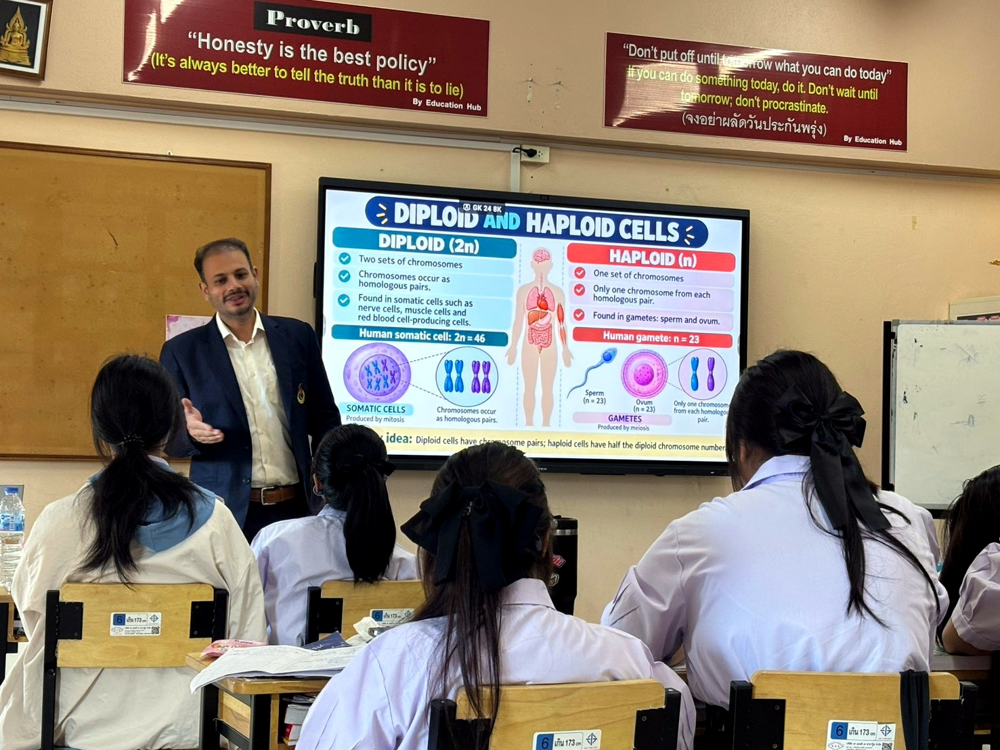
Discussing Chromosomes and Gametes
An interactive teaching moment as the topic of chromosomes, somatic cells, and gametes is explained in front of the class.
ช่วงเวลาการสอนแบบมีปฏิสัมพันธ์ ขณะอธิบายเรื่องโครโมโซม เซลล์ร่างกาย และเซลล์สืบพันธุ์ต่อหน้าชั้นเรียน
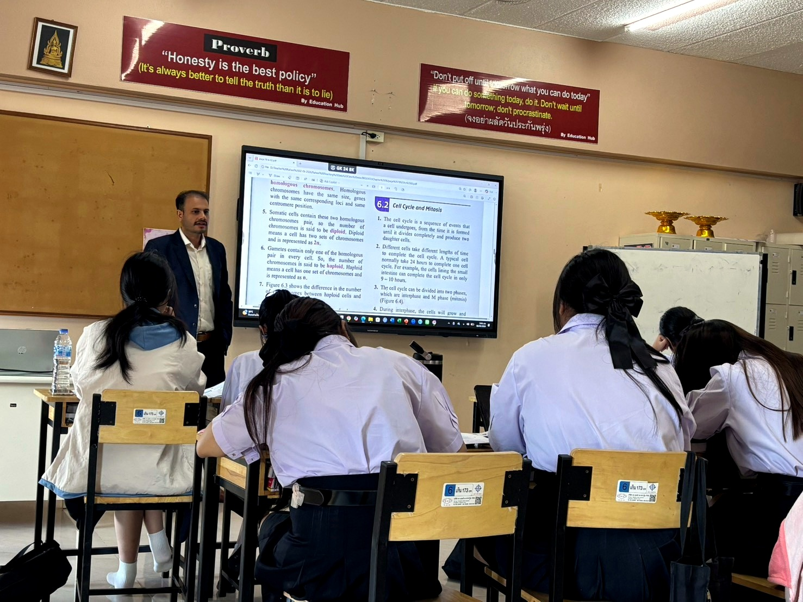
Reading About Cell Cycle and Mitosis
A calm classroom scene where students read and reflect on the section about cell cycle and mitosis together.
บรรยากาศการเรียนที่สงบ เมื่อผู้เรียนอ่านและทบทวนเนื้อหาเกี่ยวกับวัฏจักรเซลล์และไมโทซิสร่วมกัน
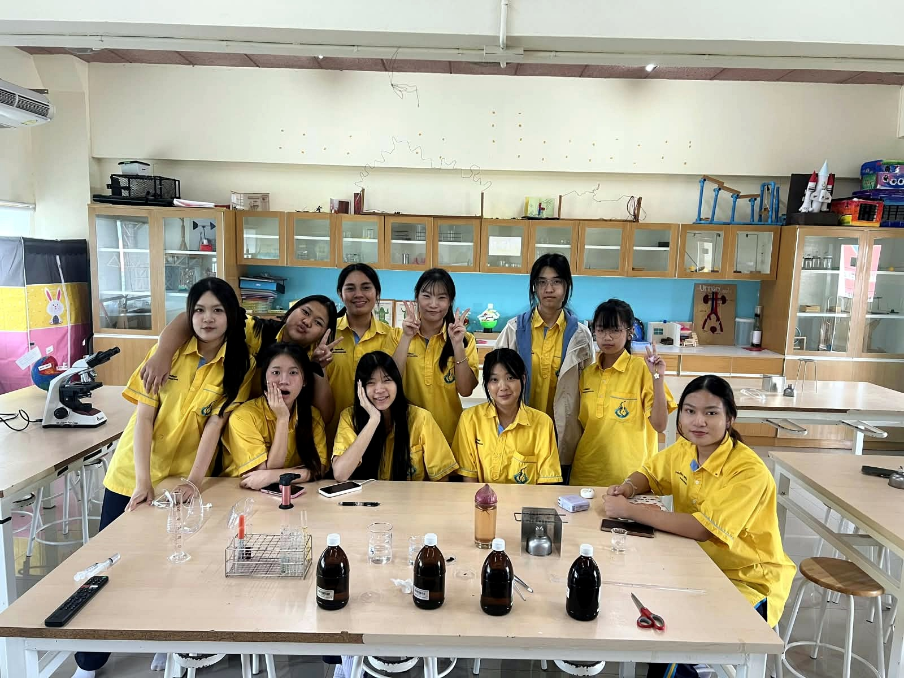
Yellow Team Lab Group Photo
A cheerful group photo capturing the yellow team gathered in the laboratory after a practical session.
ภาพหมู่ที่สดใสของทีมสีเหลืองในห้องปฏิบัติการ หลังจากจบกิจกรรมภาคปฏิบัติร่วมกัน
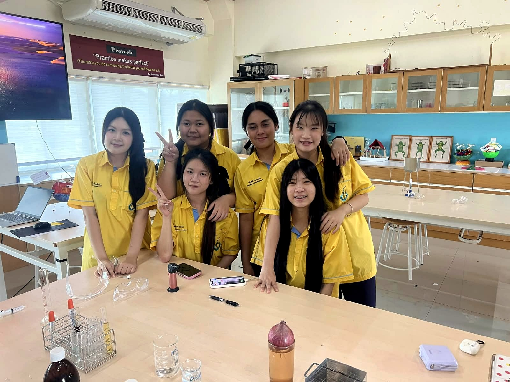
Smiles After the Practical
A smaller group shares a happy moment together, showing friendship, confidence, and classroom spirit.
ภาพกลุ่มเล็ก ๆ ที่แบ่งปันช่วงเวลาแห่งความสุข แสดงถึงมิตรภาพ ความมั่นใจ และจิตวิญญาณของห้องเรียน

Thank You
Thank you for being part of our classroom memories at Visuttharangsi Kanchanaburi School.
ขอบคุณที่เป็นส่วนหนึ่งของความทรงจำในห้องเรียนของเราที่โรงเรียนวิสุทธรังษี จังหวัดกาญจนบุรี